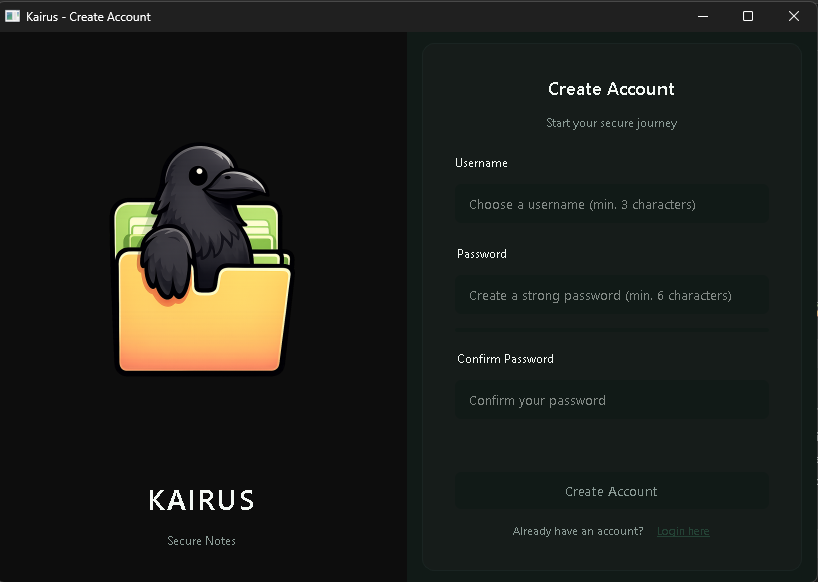
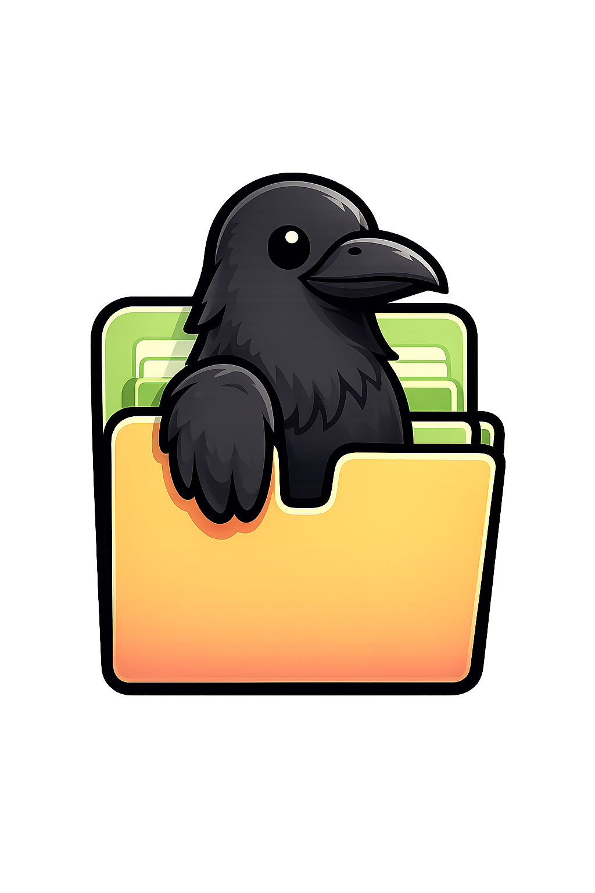

KAIRUS
Anotações Seguras
Criptografia de nível militar para suas anotações. Pastas protegidas por senha. Salvamento automático. 100% offline.

Por que KAIRUS?
Criptografia AES-256
Criptografia de nível militar para todas as suas anotações. Seus dados, sua privacidade.
Pastas com Senha
Crie pastas com senhas personalizadas para máxima segurança.
Salvamento Automático
Nunca perca seu trabalho com salvamento automático inteligente.
Nota Rápida
Tecla de atalho global (Ctrl+Insert) para capturar ideias instantaneamente.
Exportar para PDF
Exporte suas anotações para PDF ou TXT com um clique.
100% Offline
Todos os dados armazenados localmente. Sem nuvem, sem rastreamento.
Segurança em Primeiro Lugar
KAIRUS usa criptografia avançada para manter suas anotações seguras.
- AES-256-CBC Criptografia de ponta a ponta
- PBKDF2 Derivação de chave (100.000 iterações)
- Salt Único Por criptografia
- Pastas Seguras Protegidas por senha
- Hash Seguro De senhas
Atalhos do Teclado
Perguntas Frequentes
Sim! O KAIRUS é completamente gratuito e de código aberto. Sem taxas escondidas, sem assinaturas, sem níveis premium. Acreditamos que segurança e privacidade devem ser acessíveis a todos.
O KAIRUS foi projetado para ser 100% offline visando máxima segurança. No entanto, você pode sincronizar manualmente sua pasta de dados usando qualquer serviço em nuvem como Google Drive, Dropbox ou OneDrive.
Devido à criptografia de ponta a ponta, não há opção de recuperação de senha. Suas anotações só podem ser acessadas com sua senha. Mantenha-a segura e considere usar um gerenciador de senhas!
Atualmente, temos suporte oficial para Windows. As versões para Mac e Linux estão em desenvolvimento ativo e chegarão em breve! Siga nosso GitHub para atualizações.
O KAIRUS usa AES-256-CBC, o mesmo padrão usado por governos e forças armadas mundialmente, combinado com derivação de chave PBKDF2 (100.000 iterações) e sal único por nota.
Sim! Você pode exportar anotações individuais como arquivos PDF ou TXT com formatação preservada. A exportação em lote e formatos adicionais (Markdown, HTML) virão em atualizações futuras.
Pronto para começar?
Baixe o KAIRUS hoje e tenha controle sobre suas anotações com criptografia de nível militar.
